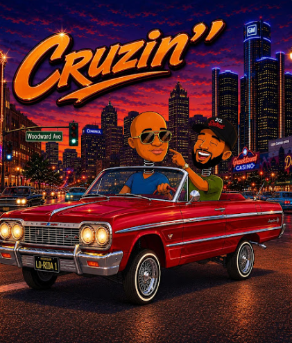

New music from jazz musician Emil Gordon Sr, featuring Risk on "Cruizn" — now streaming everywhere and featured on STV Radiomeltdown.
Official Music Video
Emil Gordon Sr
Emil Gordon Sr brings a jazz musician's ear to "Cruizn," a new single featuring Risk that's now part of the STV Radiomeltdown rotation. Smooth, groove-driven, and built for the ride — this is the kind of track that fits right into the network's mix of indie music, underground talent, and culture-first programming.
Featured this issue in The Static, STV Radiomeltdown's culture and music newsletter, spotlighting new and slept-on artists pushing the sound forward.
All Platforms